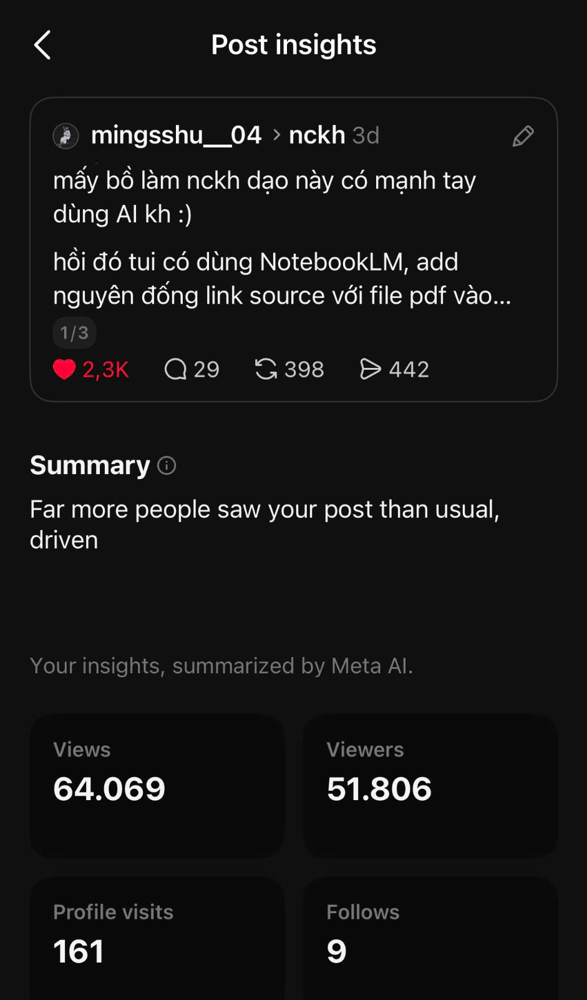
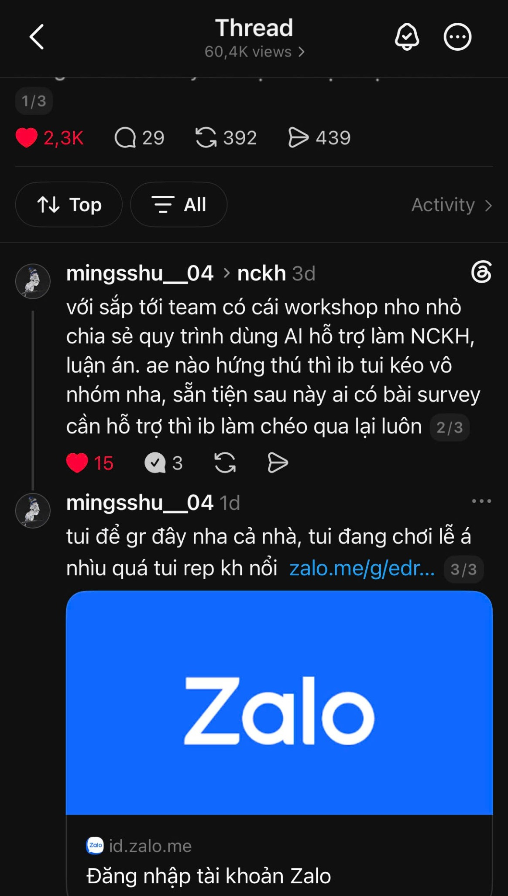
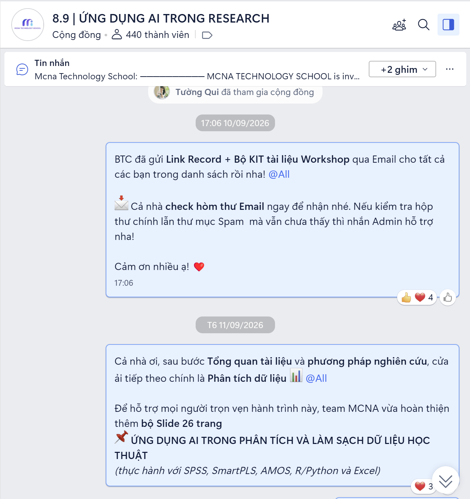

The story
What changed how I think about growth
When I took ownership of the AI for Research event, I assumed people came for something tangible — documents, prompt packs, templates. Lead magnets do work.
But one small Threads experiment shifted that. While researching our audience, I wrote a post about one recurring pain point — Literature Review — the way they naturally talk: a personal tip, not a campaign message.
It reached 60K+ views (2.3K likes, 392 reposts, 439 shares) and became one of the strongest organic entry points into our community. The Zalo group grew from 98 to 440 members.
The post worked because it met an existing pain point and made readers pause: “Maybe I don’t know how to use AI for research as well as I thought.” That curiosity created demand before we asked anyone to register.


